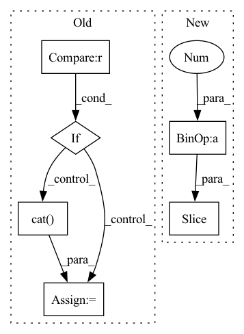

Pattern ID :23121
Before Change
def forward(self, from_up, from_down, mask=None):
from_up = self.act(self.norm0(self.up_conv(from_up)))
if self.concat:
if "res" in self.mode :
x1 = torch.cat( (from_up, from_down, mask), 1)
else:
x1 = torch.cat((from_up, from_down), 1)
else:
if from_down is not None:After Change
_,C,H,W = x1.shape
for idx, convs in enumerate(zip(self.conv2, self.conv3)):
mask = convs[0](torch.cat([x1[:,:C//2], mask], dim=1))
x2_actv = x1[:,C//2 :] * mask
x2 = convs[1](x1[:,C//2:] + x2_actv)
x2 = self.bn[idx](x2)
if self.residual:In pattern: SUPERPATTERN
Frequency: 3
Non-data size: 6
Instances Fragment ID: 73086904
Project Name: bcmi/slbr-visible-watermark-removal
Commit Name: 43e84b70895d28955496122816e50857863e5bfd
Time: 2022-01-04
Author: lj200820082007@163.com
File Name: src/networks/blocks.py
M Class Name: MBEBlock
N Class Name: MBEBlock
M Method Name: forward(4)
N Method Name: forward(4)
M Parent Class: nn.Module
N Parent Class: nn.Module
M File Name: src/networks/blocks.py
N File Name: src/networks/blocks.py
M Start Line: 244
M End Line: 260
N Start Line: 254
N End Line: 267
Before Change
stacked.append(input)
for idx in range(self.depth):
if idx != 0 :
x = torch.cat( stacked, dim=1)
x = self.net[idx](x)
stacked.append(x)
output = torch.cat(stacked[1:], dim=1)After Change
x_residual = x_residual + x
in_channels = growth_rate[idx]
stacked_channels = sum(growth_rate[idx+1: ])
sections = [in_channels, stacked_channels]
if idx != depth - 1: Fragment ID: 73086901
Project Name: tky823/dnn-based_source_separation
Commit Name: 8fb5cd5f4f8b4a435d058aef6204904f657abea0
Time: 2021-06-06
Author: 40362510+tky823@users.noreply.github.com
File Name: src/models/d2net.py
M Class Name: D2Block
N Class Name: D2Block
M Method Name: forward(2)
N Method Name: forward(2)
M Parent Class: nn.Module
N Parent Class: nn.Module
M File Name: src/models/d2net.py
N File Name: src/models/d2net.py
M Start Line: 51
M End Line: 62
N Start Line: 51
N End Line: 67
Before Change
stacked.append(input)
for idx in range(self.num_blocks):
if idx != 0 :
x = torch.cat( stacked, dim=1)
x = self.net[idx](x)
stacked.append(x)
output = torch.cat(stacked[1:], dim=1)After Change
x_residual = x_residual + x
in_channels = growth_rate[idx]
stacked_channels = sum(growth_rate[idx+1: ])
sections = [in_channels, stacked_channels]
if idx != num_blocks - 1: Fragment ID: 73086900
Project Name: tky823/dnn-based_source_separation
Commit Name: 8fb5cd5f4f8b4a435d058aef6204904f657abea0
Time: 2021-06-06
Author: 40362510+tky823@users.noreply.github.com
File Name: src/models/d3net.py
M Class Name: D3Block
N Class Name: D3Block
M Method Name: forward(2)
N Method Name: forward(2)
M Parent Class: nn.Module
N Parent Class: nn.Module
M File Name: src/models/d3net.py
N File Name: src/models/d3net.py
M Start Line: 357
M End Line: 367
N Start Line: 414
N End Line: 430